Sobre mi
Soy Daniel tengo 22 años, oriundo de Zacatecas,México. Soy un apasionado de la tecnología, la programación y la ciencia en general, me gusta aprender cosas cada día y sueño con cambiar el mundo de alguna manera. Soy estudiante de la carrera de Ingeniería de Software en la Universidad Autónoma de Zacatecas.
Me gustaría seguir estudiando para mantenerme actualizado, mejorar y aumentar mis conocimientos de este bonito mundo del desarrollo de software.
Quiero inspirar a los más jovenes ese gusto por la ciencia y la tecnología, poder contribuir de alguna manera en la vidad de otras personas y poner en alto el nombre de México.
"Es mucho mejor intentar y fallar, que no hacer nada por miedo al fracaso"
Conocimientos
Ingeniería de software
La Ingeniería de Software es una de las ramas de las ciencias de la computación que estudia la creación de software confiable y de calidad, basado en métodos y técnicas de ingeniería.
ingeniería de requerimientos
Recolectar, analizar y verificar las necesidades del cliente para sistemas de software, entregar una especificación de requisitos de software correcta y completa.
El objetivo es mejorar la forma en que entendemos y definimos los sistemas de software complejos.
Arquitectura de software
La arquitectura de software es un conjunto de patrones que brindan un marco de referencia necesario para guiar la construcción de software, permitiendo que programadores, analistas y todo el grupo de desarrolladores de software compartan una misma línea de trabajo y cubran todos los objetivos y restricciones de la aplicación.
Metodologías ágiles del desarrollo de software
El desarrollo de software ágil es un término general para un conjunto de marcos y prácticas basados en los valores y principios expresados en el Manifiesto para el desarrollo de software ágil y los 12 principios que lo sustentan.
Experiencia con el manejo de diferentes metodos ágiles(Scrum, Kanban, XP).
Programación
La programación es el proceso que consiste en codificar, limpiar, proteger y diseñar programas informáticos, a través del denominado código fuente. Este código debe ser escrito, probado y perfeccionado para controlar el funcionamiento interno de la computadora.
Manejo de diferentes lenguajes de programación.
UI-UX
El término UX viene de User Experience, o Experiencia del Usuario. básicamente es cómo una persona se siente mientras usa cualquier producto o servicio digital.
La expresión UI viene de User Interface, que significa Interfaz del Usuario. La idea del UI es guiar al usuario por su aplicación durante el tiempo que él la usa.
Desarrollo web
Construcción, creación y mantenimiento de sitios web. Incluye aspectos como diseño web, publicación web, programación web.
Experiencia con etiquetas, diseño, frameworks etc.
Ciencia de datos
La ciencia de datos combina múltiples campos, como estadísticas, métodos científicos, inteligencia artificial (IA) y análisis de datos para extraer valor de los datos. La ciencia de datos abarca la preparación de datos para el análisis, incluida la limpieza, agregación y manipulación de datos para realizar análisis avanzados.
Computación en la nube
La computación en la nube es la tecnología que permite el acceso remoto a software, almacenamiento de archivos y procesamiento de datos a través de Internet, siendo así una alternativa a la ejecución en una computadora personal o servidor local.
Administración de
bases de datos
Una base de datos es una colección organizada de información o datos estructurados, generalmente almacenados electrónicamente en un sistema informático. Normalmente, una base de datos está controlada por un sistema de gestión de bases de datos.
Contenido multimedia
El contenido multimedia es una pieza de información visual o sonora que se utiliza para comunicar un mensaje de manera que genere un mayor impacto en la memoria e interpretación del mensaje por parte de la persona que lo recibe.
Divulgación cientifica y téncologica
La divulgación científica y tecnológica es el conjunto de actividades que interpretan y hacen accesible a la sociedad este conocimiento, es decir, todas aquellas tareas que llevan a cabo el conocimiento científico y tecnológico a las personas interesadas en comprenderlo. o aprender sobre ese tipo de conocimiento.
Algunas habilidades técnicas




Conocimiento de herramientas


© IS. Daniel Alejandro Morales Castillo